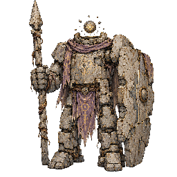
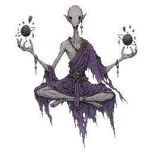

ファイヤーリザード
ID: firelizard
ほのお
ほのおタイプのスターター。3段階進化ラインの初期形態で、ロスターの基準となるほのおタイプの選択肢。
ファイヤーリザード→（レベル進化）ごうかトカゲ進化限定→（レベル進化）炎のトカゲ進化限定
最初のパートナーとして選択（野生では出現しません）
ドラフト
V1（v1）からコピーしたドラフトロスター。今後予定されている下層拡張（コモン+6種、レイヤー2+2種）に向けた次のロスターイテレーションとして用意された安全な作業スペースであり、現時点ではV1と完全に同じ構成。未承認のモンスターデザインはまだ反映していない。
ID: firelizard
ほのおタイプのスターター。3段階進化ラインの初期形態で、ロスターの基準となるほのおタイプの選択肢。
最初のパートナーとして選択（野生では出現しません）

ID: normalrat
入手しやすいノーマルタイプのコモン。通常のレベルアップで「ロバストラット」に進化し、ロスターで最も育てやすい序盤の選択肢。
現在の出現マップには接続されていません

ID: faintshade
ゴーストタイプの専門カーブボール。エスパーApexへの主要なカウンターとして意図されている。
現在の出現マップには接続されていません

ID: rockarmor
耐久力のある物理寄りのレア。ひこう・ほのおへの強力な回答でありながら、明確な対策も残されている。
進化しない
現在の出現マップには接続されていません

ID: telekineticcoil
伝説級のエスパータイプApex。ロスターで最も価値の高い遭遇・捕獲対象であり、一方的に支配的にならないよう、ゴーストカーブボールによって意図的にカウンターされている。
進化しない
現在の出現マップには接続されていません